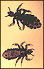

Авторитетный медицинский журнал British Medical Journal сообщает о нетрадиционном подходе к лечению головного педикулёза у детей. Предложенный автором метод, заключающийся в применении материального поощрения родителями ребёнка за самостоятельное стадийное механическое удаление (вычесывание) вшей, при котором дети получают деньги за каждого пойманного живого паразита, отличается оригинальным подходом к использованию социальных и психологических особенностей детей для повышения эффективности устранения головного педикулёза. Данный метод лечения оказался вполне приемлемым, безопасным, а также оправданным с точки зрения стоимости-эффективности.
В июньском номере авторитетного медицинского журнала British Medical Journal опубликована статья врача общей практики из Лондона Trisha Greenhalgh, сообщающего о нетрадиционном подходе к лечению головного педикулёза у детей.
Обзор результатов исследований, выполненных в соответствии с принципами доказательной медицины, показывает, что химические методы терапии с применением инсектицидов более эффективны в сравнении с механическими (вычесыванием) при лечении головного педикулёза (см. BMJ 2003; 326: 1256-8; новость от 7.10.2003 «Педикулёз: методы лечения и психологические аспекты»). Однако механическое удаление (вычесывание) паразитов может быть совершенно разным.
Предложенный автором метод (английская аббревиатура PIGPEN от «Parent-Incentivised, Graded, Patient Extraction of Nits») заключается в применении материального поощрения родителями ребёнка за самостоятельное стадийное механическое удаление (вычёсывание) вшей, при этом дети получают деньги за каждого пойманного живого паразита.
В исследовании приняли участие 200 мальчиков с головным педикулёзом, выявленных при проведении осмотра на школьных игровых площадках. В исследование не включали детей с врожденной алопецией (n=1), с прическами, не позволяющими свободно расчёсывать волосы (n=4), а также детей, родители которых выразили желание лечить ребёнка с применением фосфорорганических препаратов (n=0).
Каждому ребёнку были выданы: простой бумажный конверт (стоимостью 0,03 пенса), пластиковая расчёска с частыми зубьями (4 пенса) и увеличительное стекло (бесплатно - из упаковки воздушной кукурузы).
На первом этапе детям была предложена оплата по 1 пенсу за каждого живого паразита, помещенного в конверт. Пойманных насекомых тщательно подсчитывали, оценивали их таксономию (не учитывали, если «это только часть вши», «она уже не шевелится»), после чего ребёнку выплачивалась заработанная сумма. На втором этапе исследования ставки увеличили до 10 пенсов, а на третьем - до 50.
В итоге, средний заработок участников составил 31 пенс (от 16 до 78), 63 (от 7 до 99) и 21 (от 0 до 157), соответственно, на каждом из этапов исследования. При этом уже через неделю такого лечения ни у одного из детей вши не обнаруживались. Кроме того, естественно, что у родителей этих детей не возникали проблемы с тем, чтобы заставить ребёнка согласиться на обработку волос химическими средствами, и не было отмечено несчастных случаев, связанных с попаданием фосфорорганических соединений в глаза. Однако через три месяца все дети были реинфицированы.
И все же данный метод лечения оказался вполне приемлемым, безопасным, а также оправданным с точки зрения стоимости - эффективности. Предложенный метод PIGPEN отличается оригинальным подходом к использованию социальных и психологических особенностей детей, формируя у ребёнка интерес к микроорганизмам и позволяя ему творчески использовать предложенную схему получения денег от родителей, в конечном итоге повышая эффективность устранения головного педикулёза у детей.
T. Greenhalgh
PIGPEN therapy for head lice.
BMJ, 2003; 326: 1405.